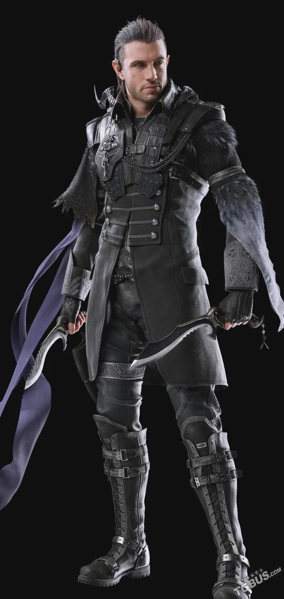
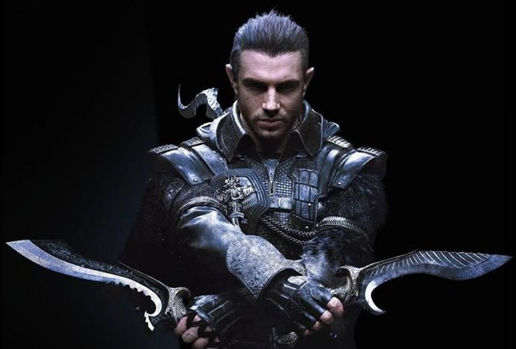
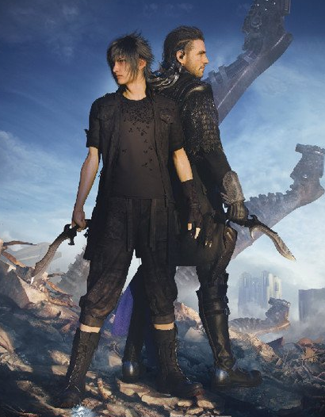

Nyx Ulric
This personal site captures Nyx Ulric as both soldier and legend—Galahdian survivor, Kingsglaive elite, and the kind of protector who keeps going long after everyone else would have fallen.
Role
Kingsglaive Veteran
Origin
Galahd
Specialty
Warp-strike Combat
Reputation
The Wall's Fiercest Protector
Profile
Nyx Ulric is not defined by ceremony or title. He is defined by motion, sacrifice, and the raw determination to protect what matters when the world starts burning.
A relentless fighter known for fast, aggressive swordplay, tactical instinct, and impossible survival odds.
Nyx carries duty like second skin—protective, stubborn, and willing to stand between danger and the people he claims as his own.
Even after loss, exile, and war, he never lets go of where he came from or who he fights for.
Timeline
Early Years
Forged by conflict, discipline, and survival long before he ever wore Lucian colors.
Kingsglaive Era
Became one of the kingdom's deadliest operatives, blending royal magic with ruthless close-quarters combat.
Legacy
Remembered as a protector whose courage burned brighter than the empire pressing at the gates.
Core Traits
Key Connections
A ruler Nyx chose to trust—and defend.
Brother-in-arms, rival, and reminder of what was lost.
A fracture point in loyalty and belief.
The future Nyx would bleed to protect.
Final Word
He is remembered not because he was unbreakable, but because he kept choosing to stand anyway.
Gallery


